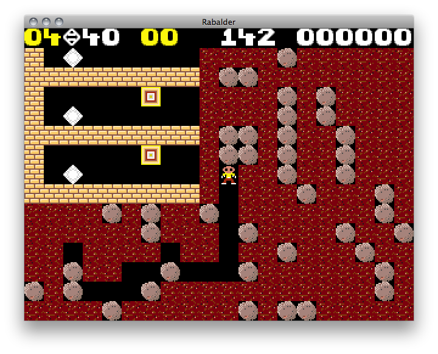

Calamity!
Balder is dead, shot with an arrow of mistletoe in a cunning twist engineered by treacherous Loki. Now Balder lingers in the underworld, the dark domain of Hel herself. However, to stop the constant pestering by Frigg, Hel has promised to release Balder, but on one condition; that every object living and dead weep for him.
A Mission from Gods
Your task is to gather the crystallized tears found throughout the underworld, and finally bring them to Hel as proof, and thus release Balder. This mission was given to you by your own deity, Ra, the Egyptian Sun-God, who appeared quite unexpectedly in this narrative, but the ways of gods are not those of mortal men.
The priests have declared that the dead god Balder, the Shining God of the Norse, is but an aspect of Ra himself, and so began your journey into the darkness...
About the game
This is my January entry for One Game a Month, and it tries to be a faithful remake of the C64 version of Boulder Dash.
The game is currently in version 0.2 beta.

To play, clone the repository or download the pre-built jar. You need Java 1.6 installed to run the game.
You might also be able to launch it using Java WebStart